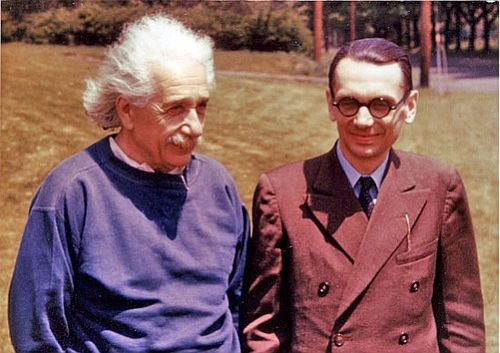

La Paradoja de Pinocho y el Origen de la Computación

Si Pinocho dice que su nariz crecerá, pero no lo hace, estaría mintiendo, pero cuando Pinocho miente su nariz crece, pero al crecer su nariz entonces estaría diciendo la verdad. Luego, ¿qué diablos debería pasar después de que Pinocho dice esta frase?
Esta es una reformulación de la vieja Paradoja del Mentiroso, lo interesante es que esta paradoja juega un papel fundamental en la solución de un importante problema de la lógica matemática, y de paso en el desarrollo de la computación moderna (y sin esta no existirían los computadores, la web, este blog, twitter, y no estaríamos contando este cuento).
A principios del siglo XX los matemáticos estaban tratando de construir los fundamentos de las matemáticas, para convertirla en la más hermosa y pura de las ciencias. Sobre estas fundaciones de roca sólida, las otra áreas más complejas de las matemáticas descansarían, y se extenderían. Eventualmente todas las proposiciones de las matemáticas podrían declararse en forma única y diafana como falsas o verdaderas, y cuando un matemático demostrara un teorema sonarían campanitas en el cielo, y un angel obtendría sus alas. ¡Que lindo!
Uno de los trabajos más grandes que representaban este ideal era el de Whitehead y Russell, plasmado en su magna obra de tres volúmenes Principa Mathematica. El tremendo esfuerzo de estos dos pensadores, que les llevó años, alcanza su cima cuando en la página 379 del primer volumen se establece la prueba de que 1+1 = 2, ¡la que se termina de demostrar en la página 86 del segundo volumen! (menos mal)
En ese tiempo existía un gran matemático llamado Hilbert que planteó una serie de problemas a sus colegas matemáticos. Se sospecha que al quedarse dormido leyendo los Principia decidió que otros aficionados le resumieran los tres pesados volúmenes, y planteó lo que se conoce con el rimbombante nombre del Segundo Problema de Hilbert, que términos sencillos se puede traducir como: “¿¡alguien me puede explicar si esta m***** de WhiteHead y Russell es consistente!?”
Es decir, lo que quería Hilbert, era que algún memorista espinilludo le dijiera si esos tres mamotretos llenos de galimatías matemáticas presentaba contradicciones internas.
Y el bueno de Kurt Gödel resolvió el problema, y encontró que la respuesta era 42.…. nooo, broma, la respuesta al segundo problema de Hilbert es negativa.
Gödel, considerado el más grande lógico del siglo XX, y a quien vemos en la foto paseando con uno de sus amigotes, era un tipo bien especial.

Se dice que sus amigos científicos le consiguieron asilo en Estados Unidos para sacarlo de Austria y huir del régimen nazi. Con el tiempo le convencieron de que aceptara la ciudadanía norteamericana. Con lo riguroso que era decidió hacer un análisis lógico de la constitución de los Estados Unidos, y descubrió que sin salirse de la constitución era posible establecer una dictadura de corte facista en ese país (que cosa más rara, ¿no creen?). Preocupado les dijo a sus amigos que se negaba a jurar lealtad a este país en esas condiciones, a no ser que se introdujieran algunos cambios a la constitución. Costó convencerlo, pero lograron que retomara la confianza y aceptó jurar fidelidad a la constitución norteamericana, requisito previo para otorgarle la nacionalidad. Pues bien, el oficial que le debía tomar el juramento le preguntó su origen, al oir su respuesta, el administrativo comentó lo bueno que era estar en una nación donde la democracía los protegía de que se estableciera una tiranía. ¡Craso error!, el pobre Gödel al oir esto saltó como quique y empezó a explicarle que se equivocaba, y que la constitución tenía una serie de fallos lógicos, y en ese momento sus amigos tuvieron que intervenir, taparle la boca, tranquilizarlo para que la ceremonia continuara.
Bueno, antes de que pasara esta anécdota, y siendo un memorista timido, Kurt Gödel demostró sus famosos teoremas de incompletitud. Y para esto usó una variante de la paradoja del mentiroso. Basicamente lo que hizo Gödel fue formular una proposición que dice “Esta proposición es indemostrable”. Si la proposición es indemostrable, entonces es cierta, y por lo tanto el la formulación de la aritmética es incompleta (porque hay una proposición no demostrada), por otro lado, si la proposición se puede demostrar, es decir, es falsa, entonces la formulación de la teoría es inconsistente.
Lo interesante es que la prueba de Gödel involucra la construcción de una suerte de máquina lógica, un computador rudimentario que escribe sentencias lógicas siguiendo ciertas reglas, lo que hace que la prueba original de Gödel sea larga en intrincada.
Actualmente el resultado de Gödel abarca mucho más que la teoría de números y la aritmética, gracias a la introducción precisa de algoritmo computacional introducido por Alan Turing. En la actualidad el teorema de Gödel se considera aplicable a todo sistema axiomático formal.
Lo que nos interesa, como resumen, es que los trabajos de Gódel, Turing y otros lógicos y matemáticos de principios del siglo XX, que pretendían resolver estos abstractos problemas fundamentales de las matemáticas llevaron al desarrollo de los conceptos de algoritmos, y de máquinas automáticas que derivaron en el desarrollo de la computación moderna.
Para los más técnicos, les recomiendo leer World’s shortest explanation of Gödel's theorem.